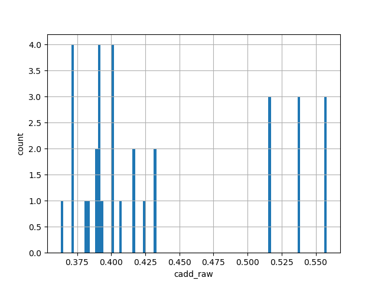
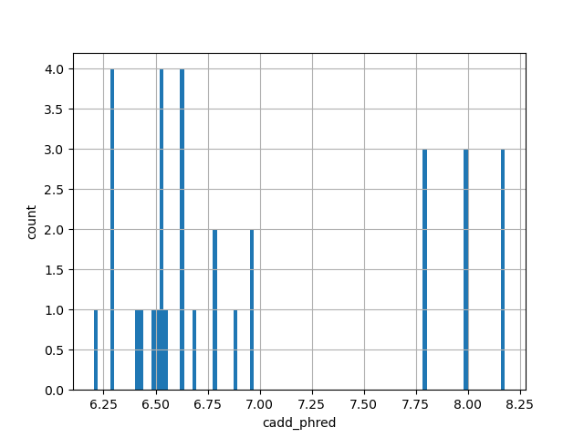

| Id: | hg38/TESTCADD |
| Type: | np_score |
| Summary: | N/A |
| Description: | N/A |
| Labels: |
| id | type | default annotation | description | histogram | range |
|---|---|---|---|---|---|
| cadd_raw | float |
cadd_raw |
 | (0.363, 0.558) | |
| cadd_phred | float |
cadd_phred |
 | (6.202, 8.178) |
| Filename | Size | md5 |
|---|---|---|
| TESTCADD.tsv.gz | 639.0 B | 18001f318b5e9226d4ce5fd16613ac43 |
| TESTCADD.tsv.gz.tbi | 99.0 B | 64ea2e483af33f1ad35d771653889e1d |
| genomic_resource.yaml | 601.0 B | 6ddfd7783ed4abd33d3e443bfc751350 |